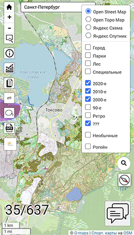
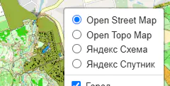
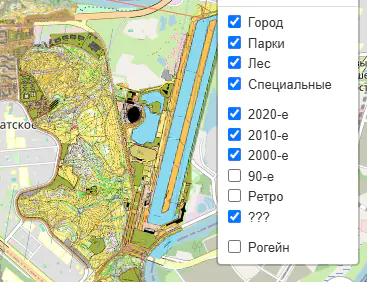
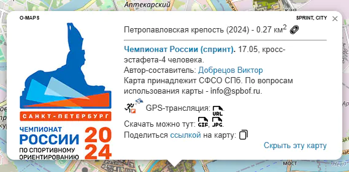

 Каждый из разделов с картами (Санкт-Петербург, Москва, Белград и все регионы вместе) представляет из себя картографическую подложку с "привязанными" к ней изображениями спортивных карт. Щелчком мыши по любой карте можно вызвать появление всплывающег окна с подробной информацией о карте.
Все карты организованы в группы (слои) по типу и по году издания. Все такие слои можно включатьвыключать независимо друг от друга.
Помимо собственно карт на экране расположено множество разнообразных элементов управления - кнопки, списки выбора, ссылки и пр.
В левой нижней части экрана расположен счётчик показываемых карт.
Подложка
 Самый "нижний" слой на экране - это картографическая подложка. Для неё могут использоваться различные источники:
- Open Street Map (OSM)
- Open Topo Map (OSM)
- Яндекс карты (Схема)
- Яндекс карты (Спутник)
Слои карт
 Спортивные карты по типу бывают:
- Городские (CITY)
- Парковые (PARK)
- Лесные
- Специальные
- Рогейн (ROGAINE)
- Необычные (FUN)
Спортивные карты по году издания делятся на десятилетия:
- 2020-е
- 2010-е
- 2000-е
- 90-е
- Ретро
- ???
Слои (типы) карт можно включать/выключать независимо друг от друга с помощью галочек (чекбоксов) в правой части экрана.
Информация о карте
 Каталог может хранить множество разной информации о каждой карте:
- Название
- Год
- Координаты углов карты для "привязки"
- Имя файла для предварительного просмотра
- Имена файлов изображений карты в высоком (ну или в не очень высоком) качестве
- Список авторов
- Список владельцев
- Список типов (слоёв)
- Указание на многодневку или серию соревнований
- Ссылка на GPS-трансляцию
- Логотип
- Любая дополнительная информация
Помимо всего перечисленного, во всплывающем окошке информации о карте показывается следующие элементы:
- Площадь карты
- Ссылка на карту
- Ссылка на страничку информации о карте
- Кнопка "Скрыть эту карту"
Площадь карты может быть или заранее прописана в каталоге, или вычислена "на лету". Вычисление происходит на основе координат углов карты. Поскольку у нас нет никакой информации о том, какую часть листа бумаги занимает собственно карта, то используется такое условное правило - (площадь листа * 70%).
"Ссылка на карту" - это ссылка на O-maps, который будет открыт именно на этой карте.
Страничка информации о карте во многом дублирует это окошко информации, разве что в другом дизайне. Но у неё есть постоянный адрес, который можно кому-то послать или где-то упомянуть, если это вдруг будет нужно. Найти её можно на "скрепке" справа от названия и площади карты.
Кнопка "Скрыть эту карту" может быть очень полезна, когда в одном месте расположено множество карт, перекрывающихся друг с другом. Т.о. можно добраться до самых "глубоко закопанных" карт.
Элементы управления
...
Всплывающее (контекстное) меню
...
Счётчик карт
...
Параметры запуска
...